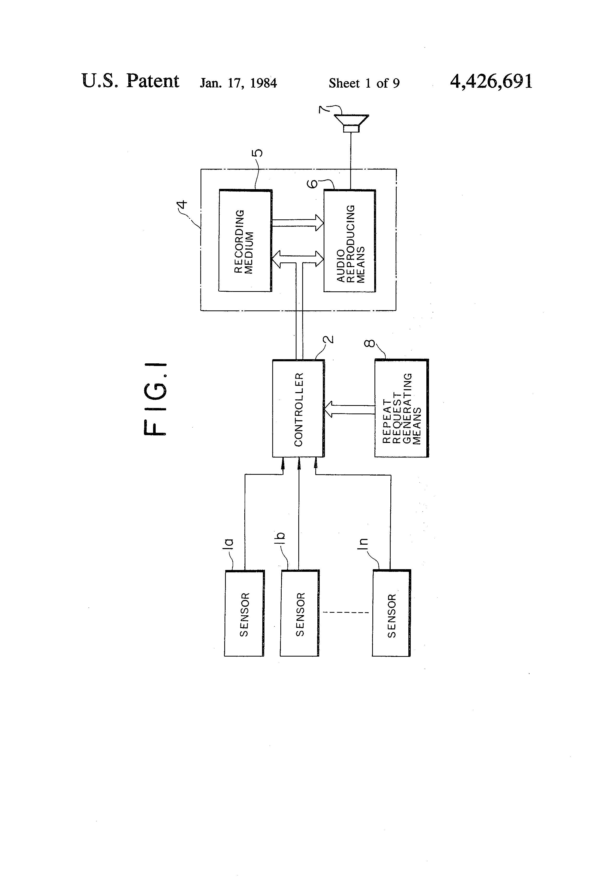
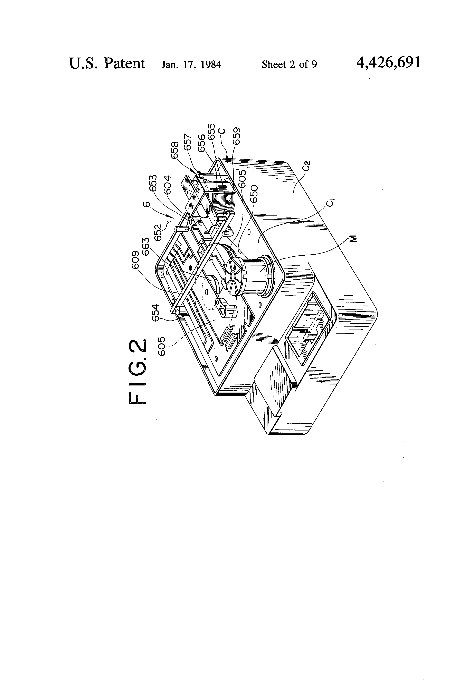

Nissan/Datsun Voice Warning System
The talking car whose 'voice' was a tiny vinyl record with six parallel grooves

Overview
In 1981 Nissan began offering a "Voice Warning" system on the Datsun/Nissan Maxima (810), 200SX, and Z-cars (280ZX) through the 1984 model year. The hardware is a box about four inches on a side mounted under the dash, labeled "Audible Warning – Don't Drop," containing a miniature, shock-resistant phonograph: a 3-inch white plastic record cut with six parallel grooves — one groove per warning message — a motor that spins the record via a rubber belt, and a tiny tonearm with a relay-style coil that pushes a needle onto the correct groove when the car's sensors demand it.
The interaction is pure analog. A dash-mounted switch arms the system; when the key is in the ignition and a monitored condition fires — a door open, the fuel low, the parking brake set — the box's control circuitry spins the disc and drops the stylus into the matching groove, and a breathy, vaguely American-accented female voice delivers the message through the car's audio system: "Left door is open," "Right door is open," "Parking brake is on," "Fuel level is low," "Keys in the ignition," "Lights are on." Her pronunciation of "parking brake" as "bocking brake" became the system's calling card.
Nissan patented the mechanism. US patent 4,426,691, "Voice warning device with repeat mechanism for an automotive vehicle," was filed by inventor Teruo Kawasaki (assigned to Nissan Motor Co. Ltd) with a priority date of July 2, 1979, and granted January 17, 1984; its figures show the record disc, tone arm, swingable arm, drive pulley, and actuator. The 1985 Maxima replaced the phonograph with a solid-state unit, ending the era of the vinyl-record car. Collector Murilee Martin documented the hardware across two decades of junkyard finds and reported that all six of his 30-plus-year-old phonograph units still played at least one alert.
Deep dive
The Voice Warning box is a complete record player: a small DC motor drives the 3-inch record through a rubber belt and drive pulley; a tonearm mounted on a swingable arm carries the pickup; a relay-style coil actuator pushes the stylus down onto the start of the selected groove; and all-analog logic circuitry decodes the car's sensor signals and moves the arm. Junkyard survivors work regardless of orientation and shrug off automotive vibration — "the entire rig is a masterpiece of packaging and design," in Murilee Martin's words — though a hard bump mid-message can make the needle skip.
Parallel grooves let one small record hold six distinct messages with no track-switching mechanism other than where the needle lands. The messages match the era's warning-buzzer functions, transposed into speech. Nissan even engineered a repeat mechanism (the subject of the patent) so the most recently triggered warning could be replayed.
The Voice Warning is the last mass-market automotive voice interface built on a phonograph record, and it beat the digital talking cars to market: Chrysler's Electronic Voice Alert, built on a Texas Instruments TMS5110A LPC speech chip, arrived for the 1983 model year. The two are the perfect analog/digital pair — one speaks from a needle in a groove, the other from a linear-predictive-coding chip. The parallel-groove record was a small family of the era: Murilee Martin points to the 1977 Mattel Monday Night Football game and Japanese home appliances of the late 1970s as kin.
The Voice Warning is a human-machine interface in the purest sense: sensors translate the car's state into a spoken utterance with zero digital processing. It is voice output achieved entirely with mechanical audio — the analog extreme of a design space the museum otherwise sees through synthesized speech (Minolta Talker, TSI Speech+, TRS-80 Voice Synthesizer). It also joins the Buick Riviera Graphic Control Center as the second automotive dashboard interface in the collection, this one speaking instead of touching.
Team & pioneers
- Nissan Motor Co. Ltd manufacturer of the Voice Warning system, fitted to 1981–84 Datsun/Nissan Maxima, 200SX and Z-cars.
- Teruo Kawasaki inventor of the repeat mechanism, US patent 4,426,691 (priority date July 2, 1979).
Media
